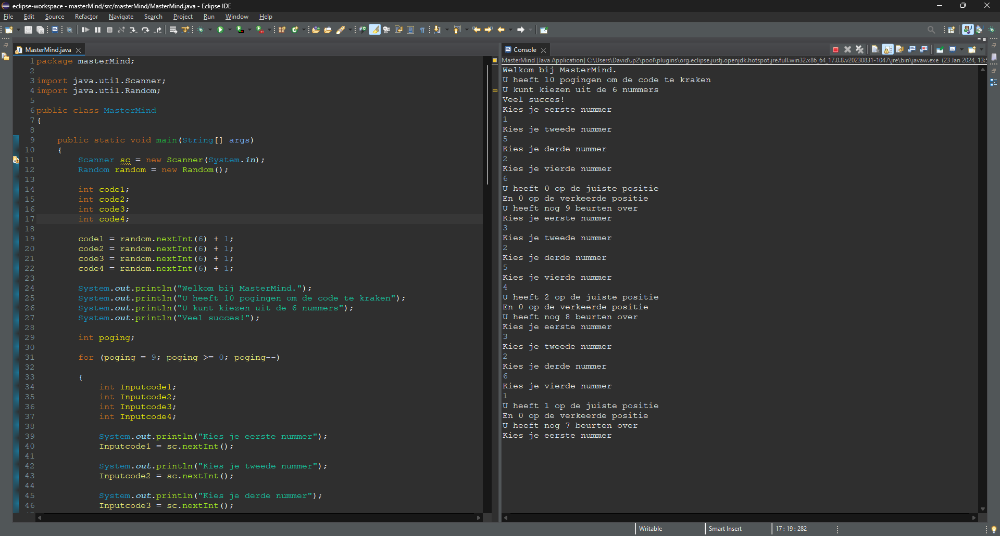
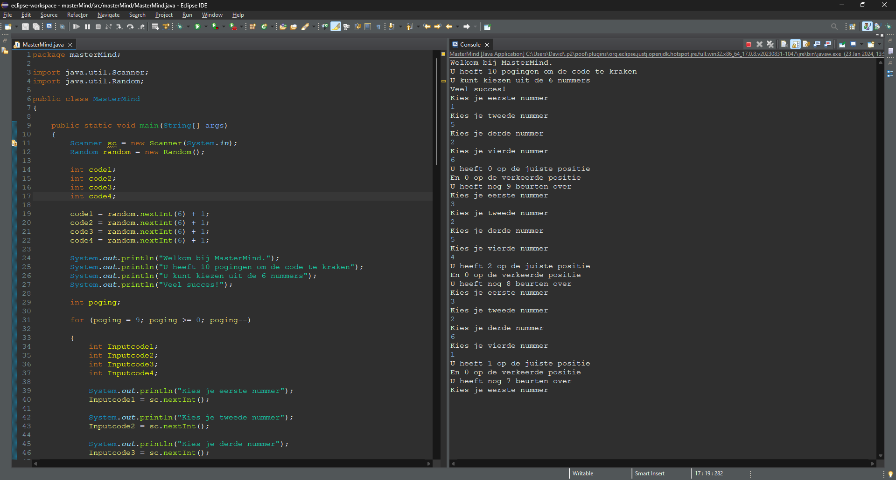

PinkGoose
Mastermind
Een van mijn eerste projecten was het na maken van een website Visual Studio Code. Tijdens het maken van deze website heb ik veel kunnen leren over het maken van websites. Op het begin ging was alles nog nieuw dus ging het een beetje langzaam. Maar nadat ik alle basics heb geleerd. Ging het relatief snel.
Hierboven ziet u mijn eerste Java-project. Dit is gemaakt in Eclipse en is het eerste spel dat ik ooit heb gecodeert. In dit project heb ik het spel Mastermind gemaakt. Het doel van dit spel is om de code te kraken in 10 pogingen. Ik heb erg veel geleerd tijdens het maken van Mastermind.